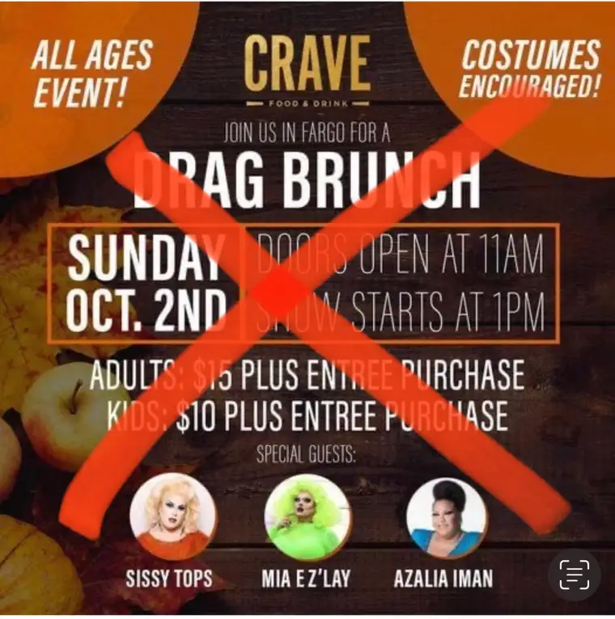

Recently, a friend notified me of an upcoming gathering at Crave restaurant in Fargo. Billed as an “all ages event,” the “Drag Brunch” was to take place at the eatery in West Acres Mall on Oct 2.
Special guests were to include Sissy Tops, Mia E Z’ Lay and Azalia Iman, as noted on Crave’s Facebook page, with both adults and children allowed entry with a minimal fee and food purchase. Participants were urged to come in costume.
As word spread through some social media circles, and people responded, Crave pulled the event. The Facebook events page no longer mentions it, though my screenshot of the poster with the planned details remains.
Some who were upset might give Crave another chance, conveying enjoyment of the restaurant’s food, but others have expressed that even thinking this was a good idea grieves them enough to end patronizing the business.
It’s unfortunate how often ordinary citizens must step up these days to voice what’s right and good. While we can’t control every morally questionable decision, we can’t ignore the blatantly wrong, either, especially when it comes to harm toward children.
Pointedly, children do not need to have men dressed as women thrust at them at a tender age. Life is confusing enough. I agree it’s wrong to even think this could have been a healthy option.
As a result of the social-media discussion, I received an email from an area parent whose child walked away from a local dance community because of an unexpected insertion of a drag-queen performance at the end of a youth dance recital this past spring.
The family deserves anonymity, but in the words of the parent who approached me, the dance recital ended with something akin to a Drag Queen Story Time. “Instead of being read a story, kids got to see a provocatively dressed drag queen strut on stage.”
The event, which took place at the Rieneke Fine Arts Center, comprised dozens of classes of children ages 3 to high school. “The drag performance was a surprise, pretty much of an ambush to those who sat in the audience with their small children, or observed while their children sat in a separate designated area for performers.” And parents weren’t given advance warning.
“Drag is predominantly an adult form of entertainment, as evidenced by the links sprinkled throughout the entertainer’s (social media) feeds,” the parent noted. On the entertainer’s Instagram account, one finds this description: “The Transsexual Menace,” and another sexually inspired nickname not fit for print.
People are reluctant to push back on this, the parent added, fearing they’ll be branded unfairly, noting that many of these children and their parents see the dance instructor as an authority figure, and are afraid of “retaliation in the form of being blacklisted from plum roles in future productions.”
Our children are our future and our hope, deserving of our utmost protection. Pushing back from the obvious line that’s been crossed here will not only ultimately benefit children, but everyone.
[For the sake of having a repository for my newspaper columns and articles, I reprint them here, with permission, a week after their run date. The preceding ran in The Forum newspaper on Oct. 3, 2022.]